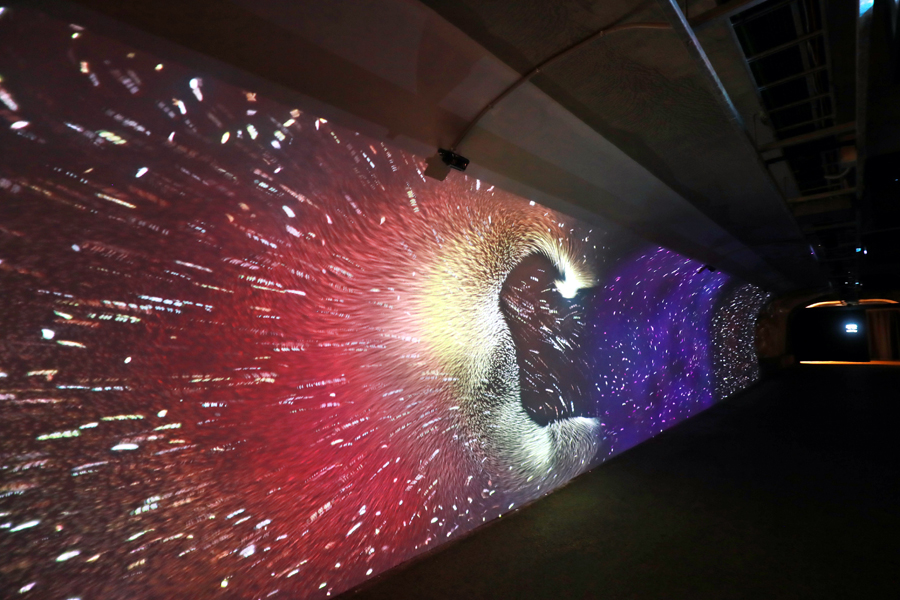
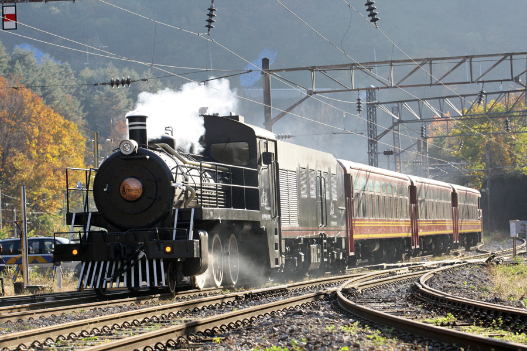
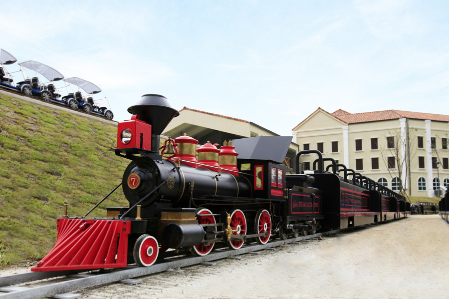
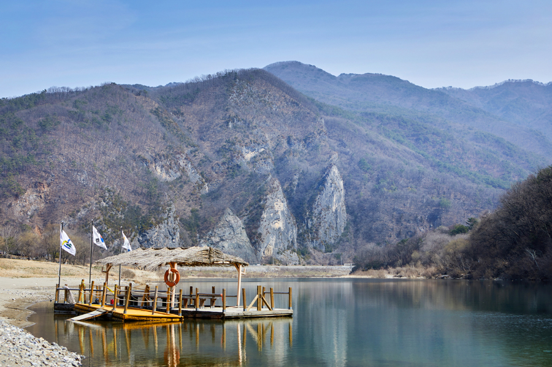
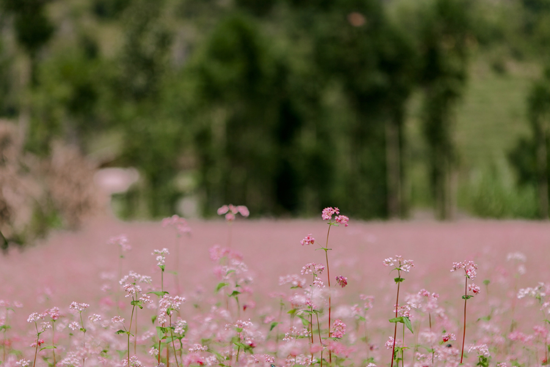

가족과 함께 떠나보면 좋을 언택트 여행지
사계절 언제 떠나도 좋은 강원도,
아름다운 자연과 다양한 볼거리는 물론 핫한 체험과 레포츠까지 곳곳에서 활력이 넘친다.
특히 가족들과 함께 떠나보면 좋을 여행지를 소개한다.
<참고 강원네이처로드 매거진>
언택트 여행지 추천 명소 여행 매거진 - 강원네이처로드

1. 태백 통리탄탄파크 (과거 화려했던 탄광도시의 과거와, 현재, 미래를 재현)
강원 태백시 통골길 116-44
(구)한보광업소 부지였던 곳이 새롭게 변모하여 폐광유산을 관광자원한 2021년 7월부터 본격 운영한 신규 여행지다.
구문소의 용궁 설화를 모티브로 한 라이브스케치, 여섯 대륙의 대표 동물들을 만날 수 있는 증강현실(AR) 체험 포토존 등 다양한 체험을 할 수 있다.


2. 삼척 하이원추추파크 (국내 최초 철도형 기차 테마파크)
강원 삼척시 도계읍 심포남길 99
삼척시 도계읍에 위치한 산악철도와 영동선을 활용한 국내 최초 기차테마파크로, 추억의 증기기관차인 스위치백트레인 등 4가지 체험시설로 구성되어 있다.
가족 단위로 편안하게 쉴 수 있는 4가지 테마의 숙박시설도 마련되어 있다.


3. 영월 연당원 (9개 가지 테마로 구성된 강원도 지방정원 1호)
강원 영월군 남면 연당리 865-8
연당리에 들어선 정원이라는 뜻으로, 2021년 6월 영월 서강을 따라 조성된 강원도 1호 지방정원이다.
흐드러지게 핀 노란 금계국을 비롯해 축구장 15개 규모, 꽃 29종을 비롯한 식물 100여 종이 자리를 잡았다.